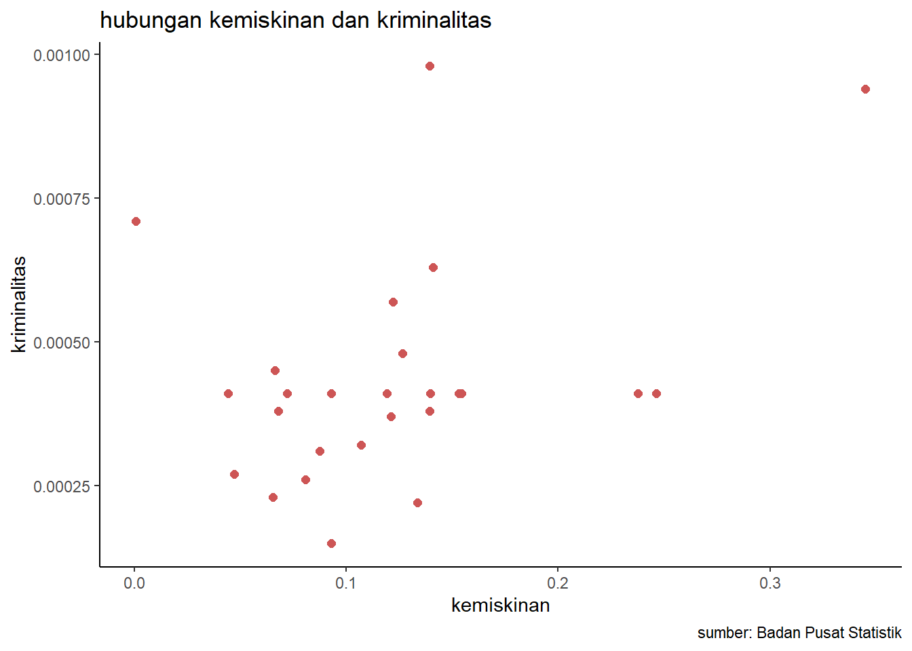

library(tidyverse)
library(readxl)
library(dplyr)
library(writexl)Pengaruh Kemiskinan terhadap Kriminalitas di Indonesia
Metode Penelitian Politeknik APP Jakarta

1 Pendahuluan
1.1 Latar belakang
Indonesia merupakan negara dengan jumlah penduduk terbesar keempat di dunia, yaitu dengan penduduk sekitar 270 juta jiwa pada tahun 2020. Dengan jumlah penduduk yang sangat banyak tidak dipungkiri bahwa Indonesia menghadapi berbagai permasalahan sosial. Salah satu masalah sosial yang masih menjadi masalah darurat di Indonesia adalah kemiskinan. Angka kemiskinan di Indonesia selalu meningkat setiap tahunnya.
Banyak sekali dampak negatif yang dapat terjadi jika angka kemiskinan suatu negara tinggi. Kriminalitas adalah salah satu contih dampak yang dapat timbul akibat adanya masalah sosial kemiskinan. Semakin tinggi angka kemiskinan yang ada maka angka kriminalitas juga dapat semakin tinggi.
Beberapa penelitian telah menunjukkan adanya hubungan antara kemiskinan dan kriminalitas, baik secara positif maupun negatif. Secara positif, kemiskinan dapat meningkatkan kriminalitas karena orang miskin cenderung melakukan tindakan kriminal untuk memenuhi kebutuhan hidupnya. Secara negative, kemiskinan dapat menurunkan kriminalitas karena orang miskin tidak memiliki akses atau sasaran yang menarik bagi pelaku kriminal.
Hubungan antara kemiskinan dan kriminalitas tidak selalu searah dan sederhana karena dipengaruhi oleh berbagai faktor lain, seperti budaya, agama, hokum, dan lingkungan. Oleh karena itu, penelitian ini bertujuan untuk menguji pengaruh kemiskinan terhadap tingkat kriminalitas di Indonesia.
1.2 Ruang lingkup
Penelitian ini menggunakan data kriminalitas, dan kemiskinan dari Badan Pusat Statistik (BPS) tahun 2022 untuk 36 provinsi di Indonesia. Objek yang digunakan terdiri dari dua variabel, yakni variabel x dari data kemiskinan dan variabel y dari data kriminalitas. Penelitian ini menguji pengaruh kemiskinan dan pengangguran terhadap kriminalitas di Indonesia.
1.3 Rumusan masalah
Apakah kemiskinan mempengaruhi kriminalitas di Indonesia ?
Bagaimana hubungan kemiskinan dan kriminalitas di Indonesia ?
1.4 Tujuan dan manfaat penelitian
Tujuan dari penelitian ini adalah untuk menganalisis pengaruh kemiskinan terhadap tingkat kriminalitas di Indonesia, dengan menggunakan data dari Badan Pusat Statistik, dari 36 provinsi di Indonesia. Manfaat dari penelitian ini adalah untuk memberikan informasi dan rekomendasi kepada pemerintah dan masyarakat tentang faktor-faktor yang mempengaruhi kriminalitas.
1.5 Package
Packages yang digunakan antara lain sebagai berikut:
2 Studi pustaka
Kemiskinan
Kemiskinan adalah sebuah masalah sosial yang erjadi ketika seseorang tidak mampu untuk memenuhi kebutuhan dasarnya seperti makanan, pakaian, tempat tinggal,, kesehatan, dan pendidikan. Kemiskinan terdiri dari dua jenis, yaitu kemiskinan absolut dan kemiskinan relatif. Ketika individu hidup di bawah suatu batas pendapatan yang ditetapkan oleh pemerintah atau lembaga internasional maka dapat disebut kemiskinan absolut. Ketika individu hidup di bawah standar kesejahteraan yang berlaku di masyarakat sekitarnya maka disebut kemiskinan relatif.
Kemiskinan sendiri pastinya berdampak negatif, baik bagi individu, keluarga, maupun masyarakat. Dampak tersebut antara lain adalah malnutrisi, penyakit, kematian dini, rendahnya kualitas pendidikan dan keterampilan, kurangnya kesempatan dan partisipasi sosial, meningkatnya kriminalitas dan kekerasan, serta kerusakan lingkungan dan sumber daya alam. Dalam mengatasi kemiskinan dibutuhkan upaya yang komprehensif, terpadu, dan berkelanjutan dari berbagai pihak.
Kriminalitas
Tindakan melanggar hukun yang berlaku di suatu wilayah disebut kriminalitas. Kerugian dari tindakan kriminalitas dapat dirasakan dari segi ekonomis, psikologis, maupun sosial. Pelaku dari tindakan kriminalitas sendiri disebut kriminal atau penjahat. Kriminal dapat diberikan sanksi hukum yang berupa denda, penjara, hingga yang paling berat hukuman mati.
Kemiskinan, pengangguran, ketidakadilan, pendidikan yang rendah, lingkungan yang buruk, pengaruh media, ataupun gangguan jiwa menjadi beberapa faktor penyebab seseorang atau kelompok melakukan tindakan kriminalitas. Selain itu, kriminalitas juga dapat disebabkan oleh faktor biologis, psikologis, atau sosiologis.
Tak dipungkiri dampak dari tindakan kriminalitas sangatlah luas dan merugikan bagi berbagai pihak. Kerugian tersebut dapat berupa ketakutan, kecemasan, trauma, kerugian materi, korban jiwa, kerusakan fasilitas umum, atau gangguan ketertiban dan keamanan. Untuk mencegah terjadinya kriminalitas diperlukan upaya dari berbagai pihak.
3 Metode penelitian
3.1 Data
| Provinsi | kemiskinan | kriminalitas | y | x | |
|---|---|---|---|---|---|
| 1 | Aceh | 15,43 | 41 | 0,00041 | 0,154300 |
| 2 | Sumatera Utara | 0,08740 | 71 | 0,00071 | 0,000874 |
| 3 | Sumatera Barat | 7,23000 | 28 | 0,00041 | 0,07230 |
| 4 | Riau | 6,6500 | 45 | 0,00045 | 0,0665 |
| 5 | Jambi | 6,28 | 29 | 0,00041 | 0,154300 |
| 6 | Sumatera Selatan | 12,21 | 57 | 0,00057 | 0,122100 |
| 7 | Bengkulu | 15,3 | 97 | 0,00041 | 0,15300 |
| 8 | Lampung | 12,65 | 48 | 0,00048 | 0,1265 |
| 9 | Kepulauan Bangka B. | 5,85 | 24 | 0,00041 | 0,154300 |
| 10 | Kepulauan Riau | 10,69 | 32 | 0,00032 | 0,106900 |
| 11 | DKI Jakarta | 4,44 | 277 | 0,00041 | 0,04440 |
| 12 | Jawa Barat | 9,3 | 15 | 0,00015 | 0,0930 |
| 13 | Jawa Tengah | 11,87 | 25 | 0,00041 | 0,154300 |
| 14 | DI Yogyakarta | 13,36 | 22 | 0,00022 | 0,133600 |
| 15 | Jawa Timur | 13,98 | 26 | 0,00041 | 0,13980 |
| 16 | Banten | 6,79 | 38 | 0,00038 | 0,0679 |
| 17 | Bali | 5,5 | 34 | 0,00041 | 0,154300 |
| 18 | Nusa Tenggara Barat | 13,95 | 98 | 0,00098 | 0,139500 |
| 19 | Nusa Tenggara Timur | 23,76 | 57 | 0,00041 | 0,23760 |
| 20 | Kalimantan Barat | 8,07 | 26 | 0,00026 | 0,0807 |
| 21 | Kalimantan Tengah | 5,35 | 18 | 0,00041 | 0,154300 |
| 22 | Kalimantan Selatan | 4,72 | 27 | 0,00027 | 0,047200 |
| 23 | Kalimantan Timur | 9,28 | 36 | 0,00041 | 0,09280 |
| 24 | Kalimantan Utara | 8,74 | 31 | 0,00031 | 0,0874 |
| 25 | Sulawesi Utara | 10,38 | 39 | 0,00041 | 0,154300 |
| 26 | Sulawesi Tengah | 14,09 | 63 | 0,00063 | 0,140900 |
| 27 | Sulawesi Selatan | 11,91 | 41 | 0,00041 | 0,11910 |
| 28 | Sulawesi Tenggara | 13,94 | 38 | 0,00038 | 0,1394 |
| 29 | Gorontalo | 23,73 | 51 | 0,00041 | 0,154300 |
| 30 | Sulawesi Barat | 12,1 | 37 | 0,00037 | 0,121000 |
| 31 | Maluku | 24,64 | 78 | 0,00041 | 0,24640 |
| 32 | Maluku Utara | 6,55 | 23 | 0,00023 | 0,0655 |
| 33 | Papua Barat | 29,2 | 289 | 0,00041 | 0,154300 |
| 34 | Papua | 34,49 | 94 | 0,00094 | 0,344900 |
Data yang digunakan berupa data persentase penduduk miskin dan crime rate dari 36 provinsi di Indonesia tahun 2022 yang diambil dari Badan Pusat Statistik (BPS). Selanjutnya peneliti mengolah data sedemikian rupa dengan melakukan log terhadap kedua variabel, sehingga menghasilkan variabel x yang didapat dari persentase penduduk miskin dan variabel y dari persentase kriminalitas. Data inilah yang nantinya akan digunakan sebagai objek dari penelitian.
library(readxl)
kriminalitas<-read_excel("C:/tugasmetopen/putri/kriminalitas.xlsx")
head(kriminalitas)# A tibble: 6 × 5
Provinsi `Penduduk Miskin` `Crime Rate` y x
<chr> <dbl> <chr> <dbl> <dbl>
1 Aceh 15.4 41 0.00041 0.154
2 Sumatera Utara 0.0874 71 0.00071 0.000874
3 Sumatera Barat 7.23 28 0.00041 0.0723
4 Riau 6.65 45 0.00045 0.0665
5 Jambi 6.28 29 0.00041 0.154
6 Sumatera Selatan 12.2 57 0.00057 0.122 library("ggplot2")
library("readxl")
library("dplyr")
ggplot(data=kriminalitas,aes(x=x,y=y))+
geom_point(color="#CD5555",size=2)+
labs(title="hubungan kemiskinan dan kriminalitas",
x="kemiskinan",
y="kriminalitas",
caption = "sumber: Badan Pusat Statistik")+
theme_classic()
3.2 Metode analisis
Metode yang digunakan dalam penelitian ini berupa metode regresu univariat untuk menguji hubungan antara variabel dependen dan variabel independent. Objek yang digunakan berupa variabel x (kemiskinan) dan variabel y (kriminalitas). Dengan ini peneliti dapat mengetahui seberapa besar pengaruh kemiskinan teradap pengangguran di Indonesia. Dengan spesifikasi yang dilakukan sebagai berikut:
\[ y_{t}=\beta_0 + \beta_1 x_t+\mu_t \] di mana \(y_t\) adalah kriminalitas dan \(x_t\) adalah kemiskinan.
4 Pembahasan
4.1 Pembahasan masalah
| Coefficients | Estimate | t value | Pr> |
|---|---|---|---|
| Intercept | 3.051e-04 | 4.780 | 3.76e-05 |
| x | 9.698e-04 | 2.173 | 0.0373 |
Dari hasil diatas, dimasukkan kedalam persamaan sehingga:
\[ y_{t}=\ 0.0003051 + \ 0.0009698 x +\mu_t \]
Nilai dari koefisien x adalah 0.0009698 yang berarti jika nilai variabel kemiskinan naik satu satuan, maka nilai variabel kriminalitas naik sebesar 0.0009698 satuan. Sedangkan nilai koefisien intercept sebesar 0.0003051 yang berarti jika nilai variabel kemiskinan adalah nol, maka nilai variabel kriminalitas adalah 0.0003051.
4.2 Analisis masalah
Hasil regresinya adalah
library(readxl)
kriminalitas<-read_excel("kriminalitas.xlsx")
reg<-lm(y~x,data=kriminalitas)
summary(reg)
Call:
lm(formula = y ~ x, data = kriminalitas)
Residuals:
Min 1Q Median 3Q Max
-2.453e-04 -7.499e-05 -4.477e-05 2.979e-05 5.396e-04
Coefficients:
Estimate Std. Error t value Pr(>|t|)
(Intercept) 3.051e-04 6.383e-05 4.780 3.76e-05 ***
x 9.698e-04 4.463e-04 2.173 0.0373 *
---
Signif. codes: 0 '***' 0.001 '**' 0.01 '*' 0.05 '.' 0.1 ' ' 1
Residual standard error: 0.0001619 on 32 degrees of freedom
Multiple R-squared: 0.1286, Adjusted R-squared: 0.1013
F-statistic: 4.721 on 1 and 32 DF, p-value: 0.03732Niali dari Multiple R-squared sebesar 0.1286, yang menunjukkan bahwa variabel kemiskinan dapat menjelaskan variasi variabel kriminalitas sebesar 12.86%. Sedangkan Adjusted R-squared sebesar 0.1013, yang menunjukkan bahwa variabel kemiskinan dapat menjelaskan variasi variabel kriminalitas sebesar 10.13%. P-value yang ditunjukkan sebesar 0.03732 yang berarti lebih kecil dari tingkat signifikansi 5% (yaitu 0.05). Hal ini menunjukkan bahwa model regresi secara keseluruhan meskipun kecil, masih memiliki pengaruh yang signifikan terhadap variabel kriminalitas.
5 Kesimpulan
Hasil regresi menunjukkan bahwa variabel kemiskinan memiliki pengaruh yang positif dan signifikan terhadap variabel kriminalitas, hal ini dibuktikan dengan nilai koefisien x sebesar 0.0009698 yang menunjukkan nilai positif dan p sebesar 0.0373 yang masih menunjukkan signifikansi. Namun dilihat dari pengaruh yang kecil, masih ada variabel-variabel yang perlu diperhtikan seprti Pendidikan, lingkungan, sosial, bahkan mungkin media”.
Kemiskinan dapat menyiptakan ketidak setaraan sosial dan ekonomi di Masyarakat, hal itu dapat menimbulkan rasa ketidakpuasan pada individu yang hidup dalam kemiskinan. Maka hal ini dapat memicu tindakan kriminal sebagai bentuk penyelesaian masalah atau pencarian keadilan.
Kemiskinan dapat menjadi penghalang bagi individu untuk mendapatkan pendidikan yang memadai, yang dapat mempengaruhi kualitas dan stabilitas hidup mereka. Tanpa pendidikan yang memadai, individu mungkin merasa terpinggirkan dan sulit memperoleh pekerjaan yang layak. Hal ini juga dapat memicu individu untuk terlibat dalam tindakan kriminal.
6 Referensi
Mardiyansyah, A. A., & Ni, M. S. (2020). Ketimpangan Ekonomi, Kemiskinan Dan Akses Informasi: Bagaimana Pengaruhnya Terhadap Kriminalitas Di Indonesia. Jurnal Ekonika: Jurnal Ekonomi Universitas Kadiri, 5(1).
Dulkiah, M. Pengaruh Kemiskinan Terhadap Tingkat Tindak Kriminalitas Di Kota Bandung. Jurnal Ilmu Sosial dan Ilmu Politik UIN Sunan Gunung Djati Bandung, 8(1), 433887.
Sari, N. C., & Azhar, Z. (2019). Analisis Kausalitas Kriminalitas, Pendidikan dan Kemiskinan di Indonesia. Jurnal Kajian Ekonomi dan Pembangunan, 1(2), 635-644.
Fachrurrozi, K., Fahmiwati, F., Hakim, L., Aswadi, A., & Lidiana, L. (2021). Pengaruh Kemiskinan dan Pengangguran Terhadap Kriminalitas di Indonesia Di Tahun 2019. Jurnal Real Riset, 3(2), 173-178.
Rahmi, M., & Adry, M. R. (2018). Pengaruh tingkat putus sekolah, kemiskinan dan pengangguran terhadap kriminalitas di Indonesia. Ecosains: Jurnal Ilmiah Ekonomi dan Pembangunan, 7(2), 147-154.